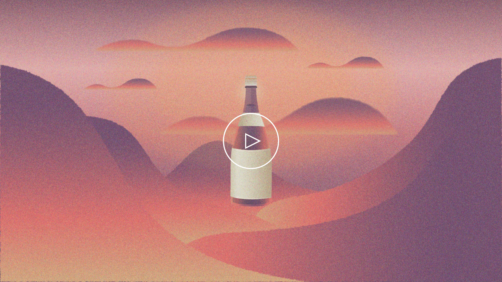

日本酒でニホンを巡る定期便
おいしい日本酒は飲みたいけど、探すのも聞くのも億劫なもの。ボトルでジャケ買いしても、ハズレだったら後悔してしまいます。そこで日本酒のテイスターや化学者と連携し、香りに基づいた５つのタイプに分類する「サケタイプ」を開発。毎月異なる地域から、好みに合わせた３酒１菜を小容量でお届けするサービスを構想しました。エグゼキューション面ではエアラインやホテルなど旅旅気分を高めるトーン＆マナーを策定。ロゴには毎月旅に出てワクワクする気分を象徴する「翼」を採用しました。ローンチから5ヶ月で700名以上の会員を獲得し、現在もグロース中。